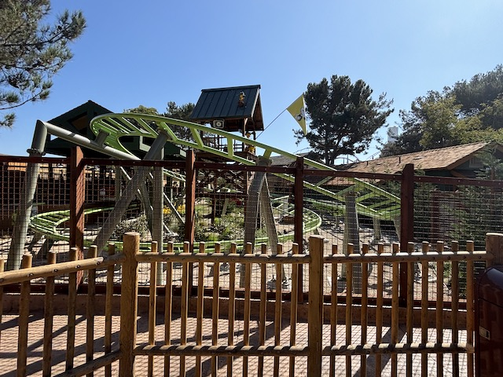
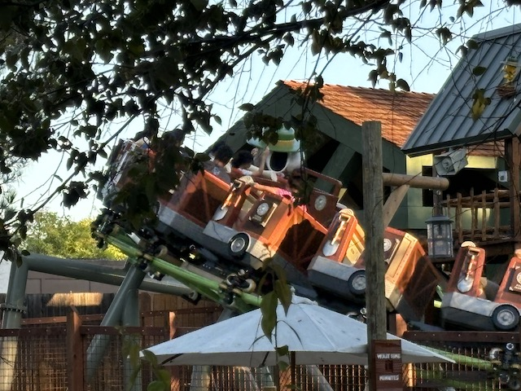
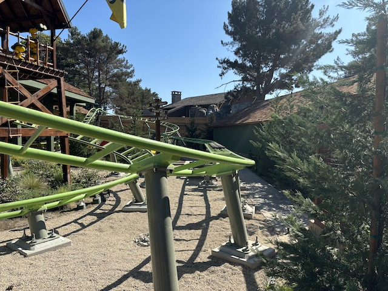
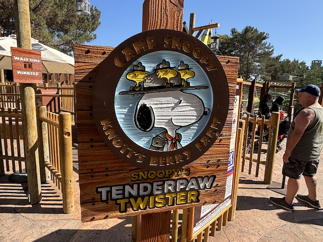

| |
Snoopy's Tenderpaw Twister Review

We're here at Knotts Berry Farm. And we're reviewing their kiddy coaster. Snoopy's Tenderpaw Twister. This may look familiar to some enthusiasts as this is the Daddy Pig Coaster from the Peppa Pig Theme Parks. This is that coaster, finally cloned at a place that's not a Peppa Pig Theme Park, and as such, has sort of become a meme. OK. Enough history. Let's ride. We climb up the lifthill, and then.....helix on down. WEE!!! Go around a turn before going through some sort of S Curve. Then we go through what on paper, sounds SHOCKING for a kiddy coaster. A launch. Yes. This kiddy coaster does indeed have a launch. And.....it's a real launch. Now it's not scary in the slightest. This "launch" basically can be described as your Dad giving you a push on the swings or the merry go round to make you go higher or faster. It's the same principle. And it honestly feels the exact same. We then go up a tiny curved hill before going through another downward helix. And back into the station! Not the worst kiddy coaster. I mean....it does have a launch. But it's still just a kiddy coaster. Children and credit whores only.
3/10
Location: Knotts Berry Farm
Opened: 2024
Built by: Zeirer
Last Ridden: October 8, 2024
Snoopy's Tenderpaw Twister Photos



Home
|